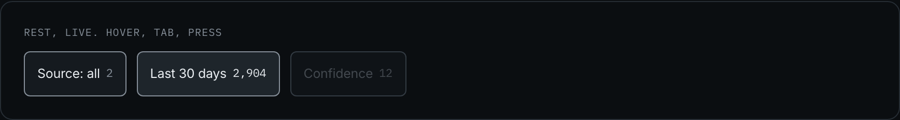
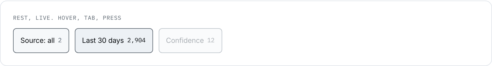
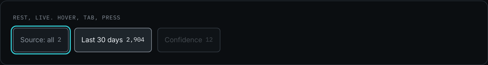
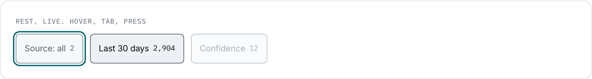

Filter chip
The filter facet, and the one control in this product that carries its own count. A facet without a count is a filter you have to guess at; with one, the person can see the size of the answer before they ask for it.
design/system/components/chip.css · 2.0, 3.0, 4.0, 5.0, 6.0. 12 occurrences.
Anatomy
| Zone | Class or element | Rule |
|---|---|---|
| the pill | .chip | 44px floor, 6px radius. It is a button, not a link: it changes the view rather than travelling |
| the count | .chip-count | Mono, because it is a value. A count that shifts width between chips cannot be compared along a row |
| the icon | svg.ic, 14px | Only where the facet needs a category mark. Most do not |
Variants
| Axis | Values | The rule that chooses |
|---|---|---|
| state | off 8 · on 4 | An on chip reads its value instead of the word "all". "Source: all 2" becomes "Intercom 30": the filter says what it is doing, not that it is doing something |
| content | with a count 9 · label only 3 | A facet that can be counted is counted. "Group by source" has nothing to count |
| emphasis | not an axis | The on state does NOT take the accent, and that is the decision. Cyan could be read as allowed here, but spending it on a filter puts the one accent in two places at once and dilutes the primary action. The on chip steps up a surface instead |
When to use it
Filtering in this product is never destructive and never hides the denominator: the scope line under the screen head restates itself whenever a chip changes, so a filtered ranking still says what it is counted from. The chip and the scope line are two halves of one promise, which is why they were designed together and why 2.0 owns both.
A chip is a button and never a link. It changes what the current screen shows; it does not travel.
Rule and anti-rule
The active facet reads its own value, and both carry the size of the answer.
The accent spent on a filter, and no counts. Now two things on the screen claim to be the next move, and neither facet says how much it holds.
| If you are about to | Take instead | Why |
|---|---|---|
| offer one of a closed set inside a form | select.input | A chip filters a view. A select answers a question the form will submit |
| mark a state that the person cannot change | .tag | A chip is pressable. A source status is not |
| navigate | .link or a tab | A chip that navigates is a link wearing a border |
States
| State | Token | What moves |
|---|---|---|
| hover | --line-hover, --text-primary | The border and the ink. The ground does not move, so hover cannot be mistaken for on |
| on | --bg-raised, --line-hover | A step up in surface, and the ink goes primary. Not the accent, by decision |
| focus-visible | --line-focus | The product ring |
| disabled | --opacity-disabled | A facet with nothing behind it. Rare, and it stays legible |




Four snapshots. On and disabled stand in the live row at rest, so photographing them would be an occurrence rather than a difference.
Re-take: node scripts/shoot-states.js chip
The file and the tokens
| Reads | Grows from | For |
|---|---|---|
--bg-surface / --bg-raised | --grey-900 / --grey-850 | off, and on |
--line-control / --line-hover | --grey-600 / --grey-400 | the boundary, and hover |
--text-secondary / --text-primary | --grey-400 / --grey-050 | off ink, and on ink |
<button class="chip">Source: all <span class="chip-count">2</span></button> <button class="chip is-on">Last 30 days <span class="chip-count">2,904</span></button>
Stands on: 2.0 Synthesis, 4.0 Theme detail, 6.1 Build brief